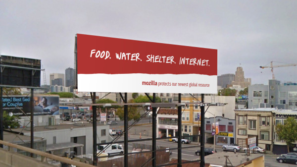

4月222016 Firefox 繼續為 Ubuntu 預設的瀏覽器 另將導入新的「snap」封裝格式 Mozilla 以透明、選擇、信任為基礎，除了要提供絕佳的使用經驗之外，也致力讓 Firefox 能跨多款平台、裝置、作業系統。而 Mozilla 與 Canonical 今天更新了雙方的合作關係，讓 Ubuntu 繼續以 Firefox 為其預設瀏覽器。我們很榮幸...
4月202016 網際網路是全球公共資源  當我 (作者 Mark Surman，下同) 到 Mozilla 上班的第一天時，最先吸引我的就是『宣言』中的這句話： “The Internet is a global public resource that must remain open and accessible to all.” 「網...
4月182016 Firefox Nightly 將開始測試 Widevine CDM 一如我們先前所宣佈的，Mozilla 努力要讓 Firefox 能透過 HTML5 的「video」標籤，播放數位版權管理 (Digital Rights Management，DRM) 所包裹的內容。我們在去年與奧多比 (ADOBE) 一同發表其 Primetime CDM，而現在將針對 Goog...
4月152016 Mozilla 支援開發的「Let’s Encrypt」結束測試階段 在 2014 年，Mozilla 即與 IdenTrust、思科 (Cisco)、阿卡邁科技 (Akamai)、電子先鋒基金會 (EFF)、密西根大學 (University of Michigan) 合作設立「Let’s Encrypt」憑證機構，期能讓 Web 加密機制更為普及。而我們很高興能在...
4月132016 Web 內容的分析與偵測函式 此專案屬於波特蘭州立大學 (Portland State University) 為大四生所設計的總整課程之一，共由 7 名學生完成為期六個月的課程。專案期間是由 Mozilla 的 Dietrich Ayala 從旁輔導，為我們留意專案的基本需求。團隊內的 7 名學生為： Abrahams, Ka...
4月62016 A-Frame 0.2.0：可擴充的 VR Web AFrame 可輕鬆針對 Web 打造虛擬實境 (Virtual Reality，VR) 內容，提供了： 以宣告式 (Declarative) 的 HTML 打造 3D 場景。 因應情境變化的 WebVR 場景可跨多元平台即時運作。 「Entity Component System (ECS)」 形...
4月12016 Firefox for iOS 新增了安全功能 Mozilla 持續努力讓 Firefox 在所有平台上盡善盡美。今天我們為 Firefox for iOS 新增安全保護功能。 Firefox 上的「密碼管理員 (Password Manager)」可針對你瀏覽過的網站，安全儲存其上的使用者名稱與密碼，待使用者日後再度登入時隨即自動填寫資訊。現在...